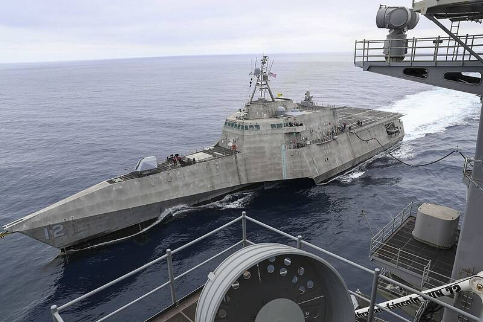

USS Omaha sphere
Off San Diego, California, July 2019

Navy personnel aboard the littoral combat ship USS Omaha filmed a dark spherical object on the ship's infrared system as it flew near the ship and then appeared to drop into the sea. The video was released by filmmaker Jeremy Corbell in 2021, and the Pentagon confirmed it was taken by Navy personnel. A search reportedly found nothing in the water. It is often cited as a possible transmedium or unidentified submerged object (USO) case; the object remains unidentified, and skeptics have suggested a balloon or drone. The pin marks the approximate area. 1
Open in the interactive Watcher
Sources
- USS Omaha (LCS-12) Wikipedia